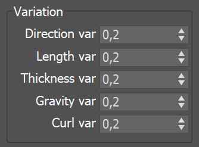
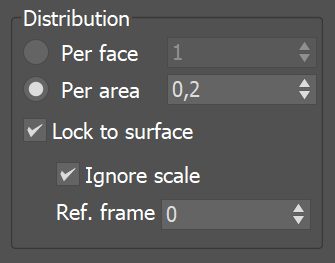
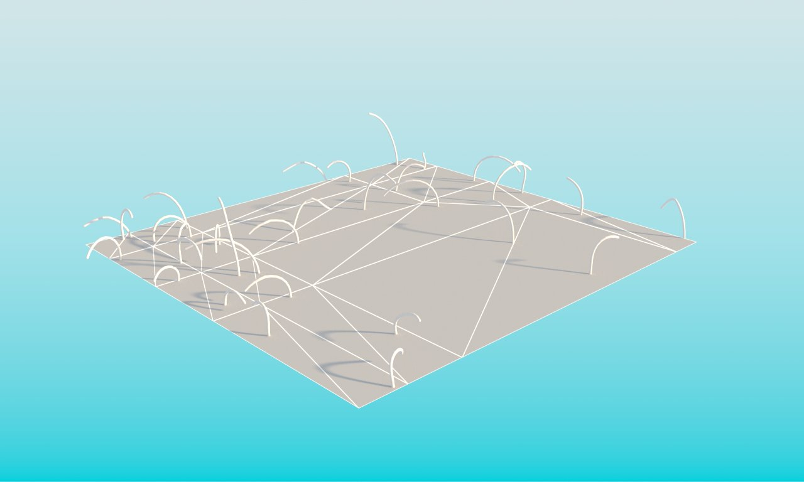
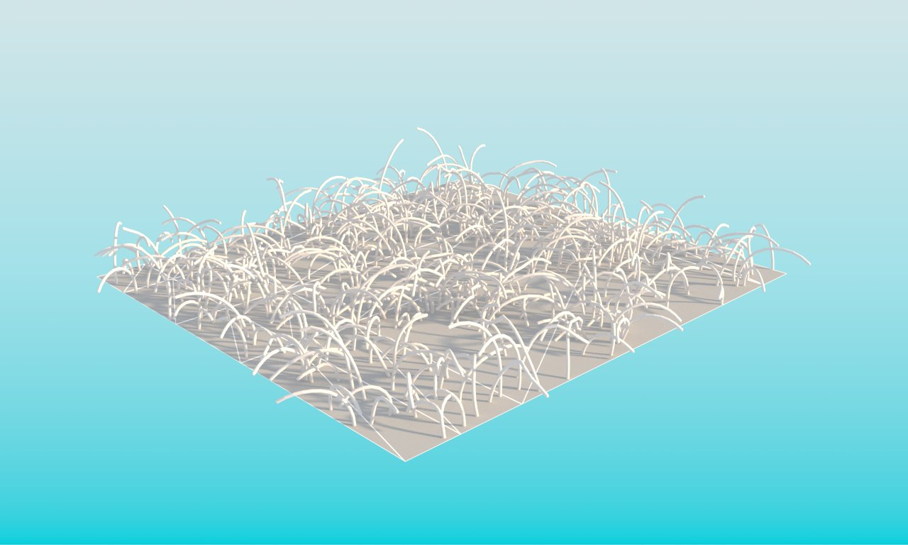

VRayFur
This page provides information on the V-Ray Procedural Fur plugin.
Overview
VRayFur is a very simple tool for creating procedural fur. The fur is generated only during render time and is not actually present in the scene.
To create a VRayFur object, you must first select a mesh from the 3ds Max scene, then go to the Create panel, choose the VRay category, and then click on the VRayFur button. Note that if you have not selected an object, or you have selected an object which is not compatible with VRayFur, the VRayFur button will appear greyed out.
UI Path: ||Select geometry|| > Create menu > V-Ray > V-Ray Fur
||Select geometry|| > Create menu > V-Ray > V-Ray Fur
||Select geometry|| > V-Ray Toolbar > V-Ray Fur button
Parameters
Source object – Specifies the source geometry on which the fur is generated. You can click on this button only from the Modify tab (and not from the Create tab).
Length – Specifies the length of the fur strands.
Thickness – Specifies the thickness of the strands.
Gravity – Controls the force that pulls fur strands down along the Z-direction.
Bend – Controls the elasticity of the fur strands. When set to 0.0, the strands are hard and created as perfectly straight lines. Greater values cause the strands to bend (e.g. under the influence of gravity).
Taper – Allows the user to add a taper to the individual strands of fur. Increasing this value makes the tips thinner and the root wider.
MtlID – Assigns a material ID to the VRayFur object. This is useful for applying a Multi/Sub-object material when multiple VRayFur objects are applied to the same geometry.
Example: Length
Using this parameter you can specify the Length of the strands.
Example: Thickness
Using this parameter you can specify the Thickness of the strands.
Length = 5.00 cm
Length = 7.50 cm
Length = 10.0 cm

Length = 12.5 cm
Length = 15.0 cm
Length = 17.5 cm
Length = 20.0 cm
Length = 22.5 cm
Length = 25.0 cm
5 cm25 cm
Thickness = 0.05 cm
Thickness = 0.10 cm
Thickness = 0.15 cm
Thickness = 0.20 cm

Thickness = 0.25 cm
Thickness = 0.30 cm
Thickness = 0.35 cm
Thickness = 0.40 cm
Thickness = 0.45 cm
0.05 cm0.45 cm
Example: Gravity
Using this parameter you can control the force that pulls the fur strands down along the Z-direction.
Example: Bend
Using this parameter you can control the elasticity of the fur strands. When set to 0.0, the strands are hard and all straight lines.
Gravity = -3.0 cm

Gravity = -2.5 cm
Gravity = -2.0 cm
Gravity = -1.5 cm
Gravity = -1.0 cm
Gravity = -0.5 cm
Gravity = 0.0 cm
Gravity = 0.5 cm
Gravity = 1.0 cm
Gravity = 1.5 cm
Gravity = 2.0 cm
Gravity = 2.5 cm
Gravity = 3.0 cm
-3 cm3 cm
Bend = 0.1
Bend = 0.2
Bend = 0.3
Bend = 0.4
Bend = 0.5
Bend = 0.6
Bend = 0.7

Bend = 0.8
Bend = 0.9
Bend = 1.0
0.11
Example: Taper
When this parameter is set to 0.0, no taper is applied to the strands and they have the same thickness from root to tip. Higher values make the root wider and the tip thinner.
Taper = 0.1
Taper = 0.2
Taper = 0.3
Taper = 0.4
Taper = 0.5

Taper = 0.6
Taper = 0.7
Taper = 0.8
Taper = 0.9
Taper = 1
0.11
Geometric Detail
Knots – Fur strands are rendered as several connected straight segments; this parameter controls the number of segments. More segments make the strands smoother, but also add to the render time. More segments are usually needed when the strands are curved (e.g. by the gravity, bend, curl parameters and others). The more straight the strands are, the less segments are needed for a smooth result.
Lvl of detail – Level of detail. When enabled, V-Ray generates less fur geometry for parts of the scene which are far away from the camera. This is done by decreasing the density of the fur strands and increasing their thickness. This parameter helps for two things: First, it conserves memory by decreasing the detail where it is too far to be visible. Second, it helps reduce animation flickering of very fine fur strands when they are far from the camera.
Start distance – Specifies the distance from the camera at which V-Ray is going to start implementing the level of detail adjustment. Up to this distance the fur will be generated as specified by the user. After that V-Ray decreases the density and increases the thickness of the strands by a factor of two for every n units of space specified by the Rate parameter.
Rate – Specifies the rate at which the detail adjustment is applied, starting from the distance specified in the Start distance parameter.
Variation
Direction variation – Adds slight variation to the direction in which fur strands grow from the source object. Any positive value is valid. This parameter should be adjusted according to the scale of the scene.
Length/Thickness/Gravity/Curl var – Adds variation to the corresponding parameter. Values range from 0.0 (no variation) to 1.0.

Distribution
This section determines the density of strands over the source object.
Per face – Specifies the number of fur strands per triangular face of the source object. Every triangle will generate the specified number of fur strands.
Per area – Specifies the number of strands per squared scene unit. For example, if the the system units are in meters, this parameter specifies the desired number of strands per square meter; if the system units are centimeters, it specifies the number of strands per square centimeter and so on. The area of the triangle faces (which is used to compute the number of strands for each face) is taken at the frame specified by the Ref. frame parameter. Every triangle face has at least one strand.
Ref. frame – Reference frame. When the Distribution parameter is set to Per area, this specifies the frame at which the source object is captured to calculate the face area. The captured data will be used throughout the entire animation to ensure that the number of strands for a given face remains constant during animation.
Lock to surface – When the Distribution parameter is set to Per area and VRayFur is assigned to an animated surface this option locks the hair count to the generated hairs count in the referenced frame. This way, when the option is enabled, the hairs stick to their relative generation points. Else VRayFur is uniformly distributed in any frame.
Ignore scale – When the Distribution parameter is set to Per area and Lock to surface is enabled this option controls whether scale transformation that is effecting the surface should be ignored when distribution area is being calculated. If disabled, the scale factor from the referenced frame is used.

Example: Distribution
Using Distribution per face parameter you can specify the number of fur strands per triangular face of the source object.
Using Distribution per area parameter you can specify the number of strands per squared scene unit.

Distribution per face = 1

Distribution per face = 2
Distribution per face = 4
Distribution per face = 8
Distribution per face = 16
Distribution per face = 32
132
Distribution per area = 0.02
Distribution per area = 0.03
Distribution per area = 0.04
Distribution per area = 0.05
Distribution per area = 0.06
Distribution per area = 0.07

Distribution per area = 0.08
Distribution per area = 0.09
Distribution per area = 0.1
0.21
Placement
Determines which faces of the source object will generate fur strands.
Entire object – All faces will generate fur.
Selected faces – Only selected faces (for example with a MeshSelect modifier) will generate fur.
Material ID – Only faces with the specified material ID will generate fur.
Mapping
Generate W-coordinate – In general, all mapping coordinates are taken from the base object. However, the W mapping coordinate can be modified to represent the offset along the fur strands. When this option is enabled, the W coordinate is the offset along the fur strands (0.0 is the strand base, and 1.0 is the tip). The U and V coordinates are still taken from the base object.
Channel – When Generate W-coordinate is enabled, this parameter specifies the channel for which the W coordinate will be modified.
Curl
Curl – When enabled, adds curls to the fur.
Curl Radius – The radius of the individual curl.
Number of curls – The number of curls on a strand.
Example: Curl radius
Using this parameter you can specify the radius of the individual curl.
Example: Number of curls
Using this parameter you can specify the number of curls on a strand.
Curl radius = 1
Curl radius = 1.25
Curl radius = 1.5
Curl radius = 1.75
Curl radius = 2
Curl radius = 2.25
Curl radius = 2.5
Curl radius = 2.75
Curl radius = 3
Curl radius = 3.25
Curl radius = 3.5
Curl radius = 3.75
Curl radius = 4
14
Number of curls = 2
Number of curls = 3
Number of curls = 4
Number of curls = 5
Number of curls = 6
Number of curls = 7
Number of curls = 8
28
Dynamic tessellation
Dynamic tessellation – When enabled, instructs V-Ray to subdivide and smooth the fur strands before rendering. Strands closer to the camera are tessellated into finer segments so that they render smooth, while strands away from camera are simplified to reduce memory usage and speed up rendering.
Edge length – Specifies the desired edge length, in pixels, of each final segment of the fur strands when Dynamic tessellation is enabled. Smaller values produce smoother strands but take more memory and are slower to render. Larger values are faster to render and take less RAM, but may cause the fur strands to appear jagged.
Maps
Base map chan – Some of the texture maps represent vectors in texture space, where the x and y directions are derived from the u and v directions of a texture mapping channel. This parameter specifies which mapping channel is used.
Bend direction map – This is an RGB map which specifies a bend direction of the fur strands in texture space (according to the specified Base map channel). This is the direction in which the fur strands curve to (the amount of curvature is also controlled by the Bend parameter). The red component is offset along the u texture direction, the green component is the offset along the v texture direction, and the blue component is the offset along the surface normal.
Initial direction map – This is an RGB map which specifies the initial direction of the fur strands, in texture space (according to the specified Base map channel). The red component is offset along the u texture direction, the green component is the offset along the v texture direction, and the blue component is the offset along the surface normal.
Length/Thickness/Gravity/Bend map – These maps are multipliers for the corresponding parameters where black is a multiplier of 0.0, and white is a multiplier of 1.0.
Density map – This map is a multiplier for the strand density. Black portions of the map correspond to zero density (effectively no fur is generated in these areas), and white represents the normal strand density, as specified by the Distribution parameters.
Curl map – This map is a multiplier for the strand Curl. Black portions of the map correspond to no curl, and white represents the set curl, as specified by the Distribution parameters.
Example: Maps
These examples demonstrate the effect of using a texture in the VRayFur texture slots. The texture used for each example is seen facing the camera. The same texture is applied to a different slot of the VRayFur and the effect can be observed on the larger plane with VRayFur applied. Note that some of the examples use normal maps. Color maps can be used instead, both procedural and bitmaps, where RGB would equal XYZ respectively.
Color or normal maps can be used for Bend direction and Initial direction, as those require a direction vector of three components.
The rest of the examples use simple black and white gradients, since the respective parameters require a single float value.
Bend direction map (XYZ or RGB)
Initial direction map (XYZ or RGB)
Length map (mono)
Thickness map (mono)
Gravity map (mono)
Bend map (mono)
Density map (Mono)
Curl map (Mono)
Viewport Display
These parameters control the display of VRayFur in the viewports.
Preview in viewport – Turns the preview of VRayFur in the viewports on or off.
Max. hairs – Specifies the maximum number of fur strands that are represented in the viewport. Lowering this value may help speed up the viewports when there's dense fur in the scene.
Icon text – Enables and disables the display of the "VRayFur" text in the view port
Automatic update – When enabled, the viewport preview of the fur is updated automatically as the source object changes. However, this may slow down the interactive work with the viewports; in this case, turn the option off to disable the automatic update.
Manual update – Manually refreshes the viewport preview when Automatic update is disabled.
Styling VRayFur
It is possible to use vertex color maps to style the fur. A separate tool for this task, VRayFurStyler, is available for download here.
Notes
-
Avoid applying textures with Object XYZ mapping to the fur. If you need to use a 3d procedural texture, apply a UVW Map modifier to the source object with the option to convert XYZ to UVW coordinates and use explicit mapping for the texture.
-
Avoid having very large triangles covered with fur, since the fur is generated in groups corresponding to triangles of the original mesh.
-
Shadow maps do not include information about the VRayFur. However, other objects cast shadows on the fur, even with shadow maps.
-
Sharp VRayShadows may produce flickering with VRayFur in animations, because the lighting situation of individual strands change very rapidly. Area shadows or VRayLights may produce smoother results.
-
VRayFur does not work with VRayPlane as a base object.